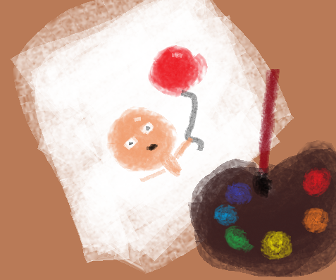

Aren't you all curious to who the artist that drew the covers to the books in the "The Adventure of the Bald Man and His Balloon" series is? Who wouldn't be? After all, the books were awarded the "Book Cover Design of the Year" since the moment of its very first publication. I shall give you a hint. It is...*drum rolls*...ME, your beloved author Knock Train!
Now, I do understand that my drawings aren't the prettiest, but there is always a charm in a novice's art. This is the same for writing, but today we shall focus on the drawing aspect of art. If you want to read more about finding inspiration in writing then read "How to find inspiration to create?" from my author's corner.
There is a lot of ways to get into drawing. I'm sure that my fellow audience, yes you, have created masterpieces at school with your colored crayons, pencils, or markers. Flying, sparkling unicorns that throw up rainbows or poop out sprinkles. For me, it was my daily life that sparked my ideas for the beloved book covers that you all love.
Fuel your imagination and I hope that the you who is reading this will create a drawing that you love.